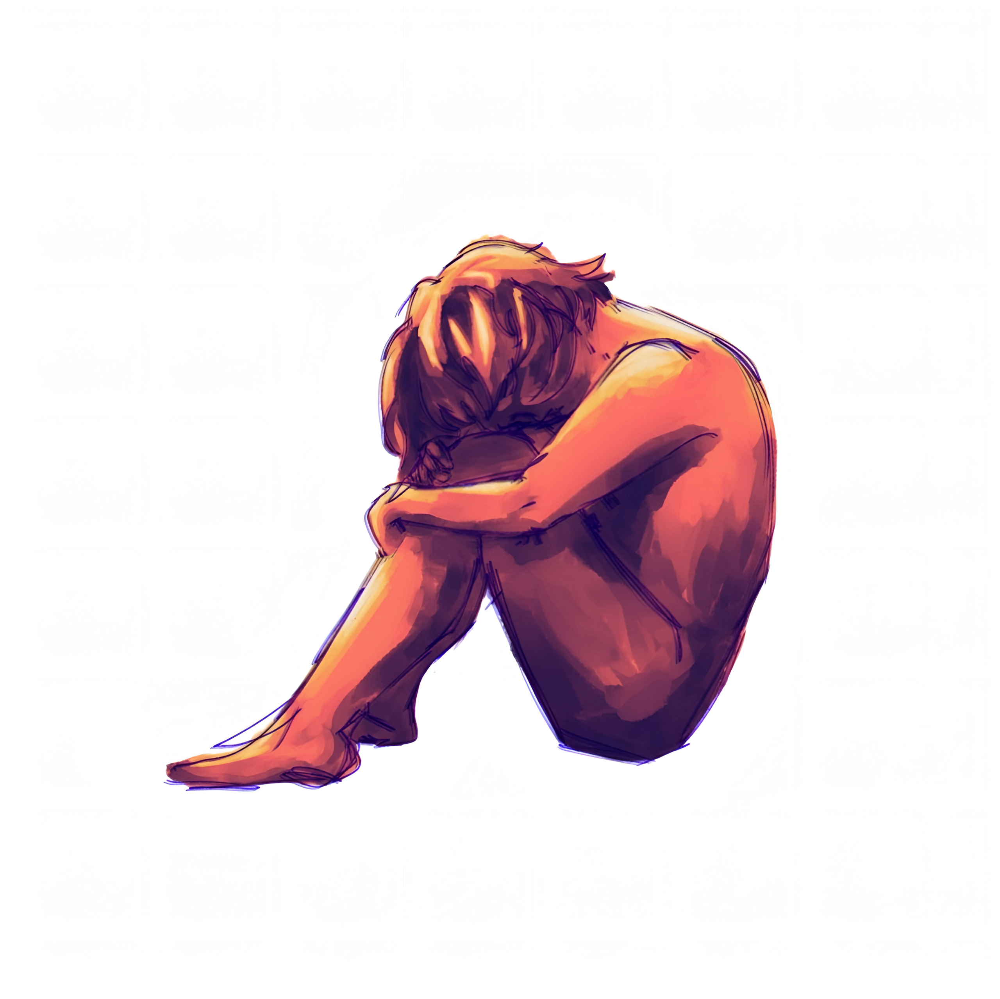

About

New Media is something that connects people beyond language. It allows cultures to communicate even when they do not fully understand each other.
I am interested in how technology changes the way we experience art, identity, and memory, and how what we call “new” will someday become old.
My work is influenced by my Kazakh heritage, politics, psychology, and international relations. I think a lot about power structures, digital memory, and the role of identity in a global world.
Even though my practice is still evolving and diverse, I know that I want to create work that reflects both tradition and technological change.
I am still shaping my artistic voice, but I believe that art has the power to shift perspectives and connect people across cultures.